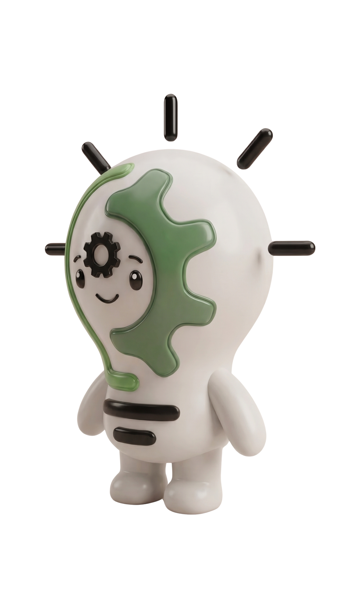
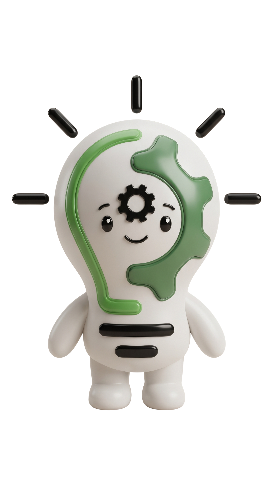
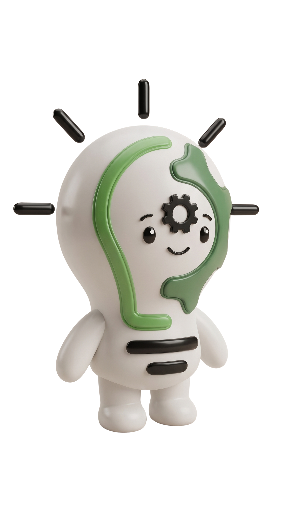

Inkomende Transmissie
Er is een versleuteld audiofragment onderschept. Beluister de briefing voordat jullie toegang vragen tot het hoofdsysteem.
Systeem Initialisatie
Welkom in de mainframe van het Verwonderlab. De 'Toekomstvisie 2030' is beveiligd door drievoudige encryptie. Om toegang te verkrijgen, vereist het systeem data-input via AI, robotica en ruimtelijk inzicht. Protocol starten?
Fase 1: Systeem Verificatie
De AI-bewaker vereist identificatie via een 5-delig veiligheidsprotocol. Ga het gesprek aan in de terminal hieronder en beantwoord de vragen.
Vraag 1/5: Wat is een ander woord voor verstandig of slim?
Fase 2: Navigatie Logica
Activeer de Ozobot op de fysieke plattegrond. Vul de ontbrekende kleurcodes in om de route naar de 'Innovatie-hub' te voltooien. Laat de succesvolle route zien aan de Systeembeheerders. Bij een correcte uitvoering ontvangen jullie een geheime map. Gebruik de 'EasiScopes' om op de map op zoek te gaan naar de locatie van het Verwonderlab. Daar vinden jullie de verborgen code. Voer deze in om verder te gaan.
Fase 3: Ruimtelijk Inzicht (3D)
Bestudeer het fysieke blokje op tafel. Onderop zien jullie een letter. Om dit op te lossen, moeten jullie de digitale blauwdruk van dit object analyseren in de 3D-omgeving.
OPEN 3D-BLAUWDRUK
Wanneer de omgeving is geopend, log je in met je inlogcode: de verkregen codenaam. Daarin staat een opdracht klaar genaamd 'Codeblok'. Hierin is het digitale 3D-ontwerp te vinden.
Zoek het verborgen getal in het digitale model. Dit getal maakt samen met de letter onder op het blokje de juiste combinatie (bijvoorbeeld A1, B2 etc.).
Kluis Gekraakt
Alle beveiligingsprotocollen succesvol gepasseerd! Neem jullie blokje mee naar de presentatiewand en plaats het op het nummer dat jullie zojuist hebben ontcijferd. Samen met de andere medewerkers vormen jullie letterlijk de fundering van ons lab.
Veel plezier vandaag!